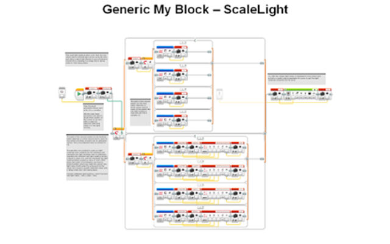
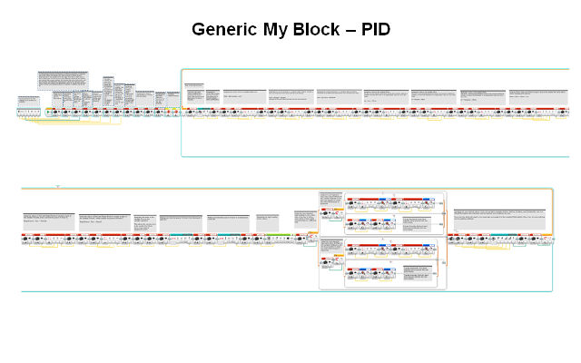
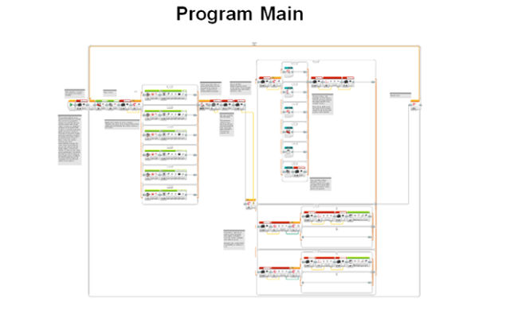
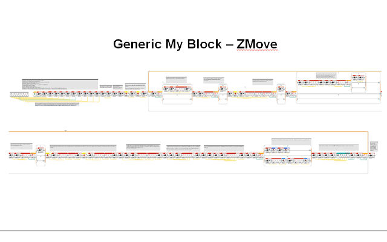
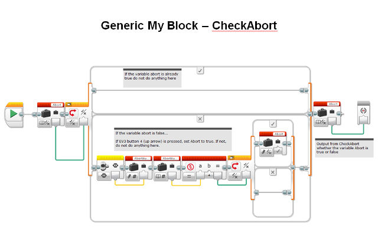

This scale light MyBlock allow us to read the raw values that a selected light sensor currently sees and either output that directly or use a formula to convert it to a reading in a range from 0 being white to 1000 being black (based on our values for white and black collected in calibration) and then output it. The equation we created to scale our light readings uses variables for the minimum and maximum raw light readings read in calibration. Inputting the minimum raw light reading (white) outputs a value of 0, and the maximum raw light reading (black) outputs a value of 1000. With these two pairs of coordinates, we found a linear function; when you input the current raw light value it will scale it to some point in the range and output a usable calibrated value with 0 being white and 1000 being black.
Returned light reading by the block = 1000* (current raw light value – min) / (max – min)
Our Proportional Integral Derivative Line Following program is a smoother way to line follow that adjusts the motor powers of motors B and C proportionally to the distance from the edge of the line, which would have a light value of 500. It takes into account the error (the difference between the optimal and current light sensor reading), the integral (the sum of all errors), and the derivative (the difference between the current error and last error). Those values are scaled to an appropriate value for use in motor powers based on three user-inputted values in variables in InitMain, Kp, Ki, and Kd.
This selection program allows us to quickly and efficiently change from one of our program/missions to another during the two and a half minute match. In fact, our selection program is a program that contains my-blocks that each holds one of our missions . The user of the robot simply starts the selection program and clicks the center button to start the first mission. Then, when the mission finishes, the robot automatically chooses the next mission and waits for you to just click the center button again, without any hassle. In case you do need to go backwards or forwards through our list of missions, the program accommodates for that by allowing you to navigate with the left and rights arrow buttons.
For straighter and more accurate movement because the move block in the EV-3 program is unreliable. Our program continuously measures the distances travelled by each motor and constantly adjusts its speed to maintain the predetermined ratio of the distance travelled by motors B and C. Also allows for accurate arc turns.
We have created a MyBlock subroutine called Check-Abort that constantly checks whether the up arrow button is pressed. If so, it exits the loop in the MyBlock it is in. Our programs are made almost exclusively out of MyBlocks, including error correction, wait blocks, pivot-turns, PID, etc. Therefore, in the rare circumstance that we must stop our robot, we can do it at any time and still stay within the overall selection program and to time, rather than fiddle with the buttons to select the next mission.
